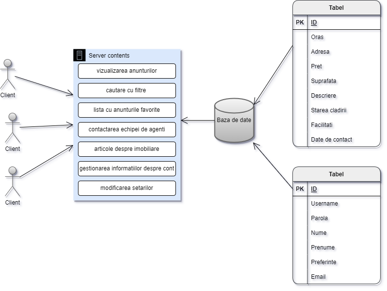

Achizitia unui imobil reprezinta un proces complex si elaborat, de cele mai multe ori fiind o decizie grea pentru cumparator. Astfel, aplicatia noastra Real Estate vine in ajutorul celor interesati de aceste servicii simplificand procesul de alegere al viitoarei lor locuinte. Scopul acestui site web este de a oferi clientilor o interfata prietenoasa si usor de manevrat, facilitand intreg procesul de achizitie.
Pentru realizarea acestui document s-au folosit urmatoarele conventii:
Acest document are ca tinta cititorii din randul profesorilor universitari, dar si utilizatorilor doritori de a intelege structura pe care a fost construit proiectul. In continuare, in acest document se pot gasi atat motivele, cat si ideile utilizate pentru implementarea aplicatiei si pentru detaliile de implementare ale fiecarei pagini.
Scopul acestui proiect este de a realiza un sistem de centralizare al imobiliarelor puse la vanzare. El doreste integrarea anunturilor existente pe piata din diverse orase din Romania, pentru a facilita o cautare si alegere mai eficienta a acestora si pentru a obtine un raport calitate-pret cat mai bun.
Referintele folosite in cadrul acestui document sunt urmatoarele:
Produsul nostru este un produs autonom care inglobeaza functionalitatile deja existente pe piata in cadrul altor aplicatii care nu satisfac nevoile cumparatorului. 
Printre multiplele functii ale produsului putem enumera vizulizarea anunturilor imobiliare dintr-un judet selectat, cautarea apartamentelor si filtrarea acestora pe baza unor caracteristici preferate de utilizator. O alta functionalitate importanta pentru experienta utilizatorului este reprezentata de lista de favorite in cadrul careia cumparatorul isi poate salva apartamanetele de care este interesat pentru a le putea accesa cu usurinta in viitorul apropiat.
Cele doua clase de utilizatori sunt reprezentate de utilizatori autentificati si utilizatori neautentificati. Prima categorie cuprinde persoanele interesate de cumpararea unui imobil, acestea dispunand de multiplele functionalitati oferite de site. Acesta isi poate gestiona contul personal si a listei de imobiliare preferate. De asemenea, el va avea optiunea de a-si filtra cautarile si personaliza setarile, iar in ajutorul alegerii pe care o au de facut vor veni si diverse articole relevante subiectului postate pe blogul paginii. Totodata, ei pot accesa informatii despre dezvoltatorii proiectului. Cea de-a doua categorie include atat persoanele indecise asupra utilizarii aplicatiei noastre, cat si viitorii vanzatori de apartamente pe care ii intereseaza sa-si studieze concurenta. Aceste persoane vor putea realiza cautari filtrate, vizualiza blogul cu articole si generalitatile despre propritarii paginii. In momentul incercarii folosirii celorlalte functionalitati, utilizatorii vor fi invitati sa se inregistreze pe site-ul nostru.
Site-ul este dezvoltat pe platforma Windows si destinat utilizarii in browser. Datele necesare functionarii acestuia sunt stocate folosind baze de date relationale interogate via SQL.
In realizarea proiectului am ales o paleta de culori bazata pe nuante de bej care transmit eleganta si formalitate. Am facut aceasta alegere deoarece aceasta culoare este asociata cu echilibrul, generand in acelasi timp o senzatie de calm si relaxare. Deoarece site-ul nostru vrea sa transforme o casa in acasa, starea generala pe care el o transmite este de liniste si confort. Designul abordat este unul simplist, fapt care denota atat neutralitatea si profesionalismul echipei noastre, cat si dorinta de a tinti o categorie de varsta cat mai mare. Fundalul paginilor este ales in concordanta cu tema proiectului, fiind unul modern si prietenos.
Intrucat site-ul Real Estate inglobeaza functionalitati existente in cadrul altor aplicatii nu la fel de complexe, el depinde de unele informatii puse la dispozitie de aceste aplicatii. Un exemplu concludent in acest sens consta in modul de parsare al crawler-ului folosit pentru a extrage anunturi imobiliare pe alte site-uri de profil. In cazul in care acestea si-ar schimba modul de structurare al datelor, crawler-ul ar fi afectat ducand la transmirea eronata a informatiilor despre un anunt.